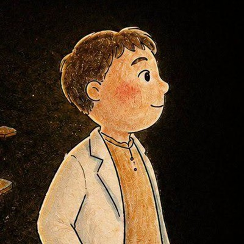

林俊言
中西醫師・二寶爸・譯者・心靈與意識的探索者
中醫系雙主修醫學系，曾在中醫診所執業、取得針灸研究所碩士；譯有《肌筋膜疼痛與機能障礙：激痛點手冊》等三本醫學書。長期進修心理諮商。現在用 AI 把教養心得和醫療知識做成孩子玩得下去、病人看得懂的網頁工具。
著作與推薦
📘 譯作
📄 期刊論文
✍️ 推薦序｜心靈工坊
- 超越正念：當下立斷的覺知練習全文 →
- 當下，繁花盛開（30 週年全新增訂版）全文 →
- 轉逆境為喜悅（全新修訂版）全文 →
- 停止追求幸福（暫名）即將出版

中西醫師・二寶爸・譯者・心靈與意識的探索者
中醫系雙主修醫學系，曾在中醫診所執業、取得針灸研究所碩士；譯有《肌筋膜疼痛與機能障礙：激痛點手冊》等三本醫學書。長期進修心理諮商。現在用 AI 把教養心得和醫療知識做成孩子玩得下去、病人看得懂的網頁工具。